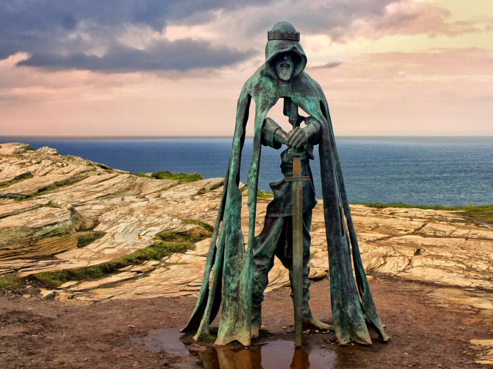

El rey Arturo, también conocido como Arturo de Bretaña, es un destacado personaje de la literatura europea, especialmente inglesa y galesa, en la cual se lo representa como el monarca ideal tanto en la guerra como en la paz. Según algunos textos medievales tardíos, Arturo fue un caudillo britanorromano que dirigió la defensa de Gran Bretaña contra los invasores sajones a comienzos del siglo VI.
Las primeras referencias a Arturo se encuentran en las literaturas célticas, en poemas galeses como Y Gododdi. El primer relato de la vida del personaje se encuentra en la Historia Regum Britanniae, de Geoffrey de Monmouth, quien configuró los rasgos principales de su leyenda. Monmouth presenta a Arturo como un rey de Gran Bretaña que derrotó a los sajones y estableció un imperio en las islas británicas. En su relato aparecen figuras como el padre de Arturo, Uther Pendragon, y su consejero, el mago Merlín, además de elementos como la espada Excalibur.
Estatua del Rey Arturo
Geoffrey de Monmouth, en su crónica La historia de los reyes de Gran Bretaña, describió a Tintagel como el lugar donde se concibió al rey Arturo. Un siglo más tarde, Ricardo, conde de Cornualles, construyó un castillo en el pueblo para rendir homenaje al legendario rey británico. Sin embargo, el Castillo de Tintagel luego cayó en la decrepitud y se convirtió en ruinas siglos después. Desde el siglo XIX, el castillo en ruinas ha sido un lugar turístico popular. Con un fondo escarpado en la punta de un acantilado que también cuenta con tiendas de souvenirs y una cafetería en el lugar, el sitio histórico es de hecho un destino turístico ideal.